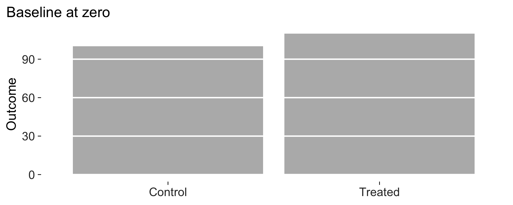
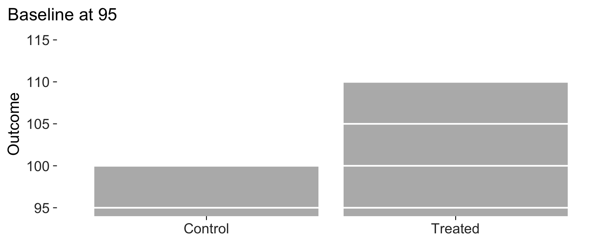

Most of what people take from Tufte is a look. I think the more interesting claim in The Visual Display of Quantitative Information is methodological. He says you can evaluate a statistical graphic, and he gives you the quantities to do it with. This article works through what each of those means here, how it’s computed, and where it’ll lead you astray if you quote it without thinking.
All data below are simulated.
set.seed(20260729)
n <- 400
d <- data.frame(
x = rnorm(n, 50, 12),
g = sample(c("Treated", "Control"), n, replace = TRUE)
)
d$y <- 12 + 0.42 * d$x + ifelse(d$g == "Treated", 3.1, 0) + rnorm(n, 0, 5)The data-ink ratio
Tufte defines the data-ink ratio as the share of a graphic’s ink given over to the non-redundant display of data, and asks that it be pushed towards one. That’s a definition without a procedure attached. No book tells you how to count ink on a screen.
data_ink_ratio() estimates it empirically. It renders
the plot to a bitmap twice, once whole and once with every data layer
stripped out of the panel grobs. Each pixel counts in proportion to how
far it sits from the background colour, so an anti-aliased edge counts
as the fraction of a pixel it really is. Subtract, and what’s left is
data ink.
base <- ggplot(d, aes(x, y)) +
geom_point(size = 1, alpha = 0.5) +
labs(x = "Pre-treatment score", y = "Outcome")
r_base <- data_ink_ratio(base)
r_base
#>
#> ── Data-ink ratio
#> 19% of the ink in this figure varies with the data.
#> • data ink: 8567 pixel-equivalents
#> • non-data ink: 36866
#> • measured at 6.5in x 4in, 150 dpiFour fifths of that ink is furniture. The grey panel alone is most of it, and it doesn’t change when the data change.
lean <- base + geom_rangeframe() + theme_tufte()
r_lean <- data_ink_ratio(lean)
r_lean
#>
#> ── Data-ink ratio
#> 81% of the ink in this figure varies with the data.
#> • data ink: 10762 pixel-equivalents
#> • non-data ink: 2560
#> • measured at 6.5in x 4in, 150 dpiThe same numbers, with 4.3 times the share of the ink doing work.
Where it misleads
Three things are worth knowing before you quote the number.
Overlap gets counted once. A dense scatterplot draws many points on top of each other and the measurement sees one blob, so dense plots understate their own data-ink. That’s the opposite of the direction you’d want the bias to run.
dense <- data.frame(x = rnorm(20000), y = rnorm(20000))
sparse <- dense[1:60, ]
lean_theme <- list(geom_rangeframe(), theme_tufte())
c(
dense = data_ink_ratio(
ggplot(dense, aes(x, y)) + geom_point(size = 0.4, alpha = 0.2) + lean_theme
)$ratio,
sparse = data_ink_ratio(
ggplot(sparse, aes(x, y)) + geom_point(size = 0.4) + lean_theme
)$ratio
)
#> dense sparse
#> 0.9899012 0.7331751Redundant data-ink still counts as data-ink. Tufte would subtract ink that repeats what the reader already has. No measurement can tell whether a mark is repeating something, so this one doesn’t try.
The number depends on the size you render at. Non-data ink is mostly fixed furniture, so shrinking the canvas raises the ratio. Compare figures at the size you mean to print them, and compare like with like.
vapply(
c(3, 6.5, 12),
function(w) data_ink_ratio(lean, width = w, height = w * 0.6)$ratio,
numeric(1)
)
#> [1] 0.7533856 0.8074221 0.8237521Treat it as a comparative instrument. I think it’s reliable for judging whether one draft of a figure is leaner than another, and unreliable as an absolute number.
And a larger caveat: the principle itself is contested
The three problems above are measurement error. There’s a fourth one. Maximising the data-ink ratio isn’t straightforwardly good, and the experimental evidence has said so for thirty years.
Gillan and Richman (Human Factors, 1994) found that higher data-ink did make readers faster and more accurate, but concluded that the principle as stated is too simple: non-data ink isn’t one thing. An axis helps; a decorative background doesn’t; and which is which depends on the task and the graph type. Inbar, Tractinsky and Meyer (2007) found that readers preferred graphs that were not minimalist, accepting moderate reduction and rejecting Tufte’s version of it. Bateman and colleagues, in “Useful Junk?” (CHI 2010), found that embellished charts were recalled better over the long run than plain ones. More recently the accessibility argument has been pressed hard: a hairline on a white background at low contrast is lean and also unreadable for a good number of people.
I haven’t resolved any of that and this package doesn’t try to. So I’ve built the numbers here as diagnostics. “This figure spends ninety-five percent of its ink on furniture” is a useful thing to know. “Therefore push the ratio to one” doesn’t follow. Take it to the limit and you’ll produce figures that are elegant, economical and worse to read. The audit reports, and you decide.
That’s also why theme_tufte() takes a grid
argument instead of refusing to draw one. A faint grid is the honest
choice whenever readers have to recover values instead of comparing
shapes.
The lie factor
The lie factor is the size of the effect shown in the graphic divided by the size of the effect in the data. A truthful graphic sits at one, and Tufte treats anything outside roughly 0.95 to 1.05 as distortion.
Given the numbers directly, it reproduces his own examples. The fuel-economy graphic in The Visual Display showed an eighteen percent change as a line growing by seven hundred and eighty-three percent.
lie_factor(c(18.0, 27.5), c(0.6, 5.3))
#> [1] 14.84211Given a plot, it computes the distortion a non-zero baseline introduces. That’s by far the most common way a published figure lies. The bar’s length stops being the quantity it stands for.
means <- data.frame(
condition = c("Control", "Treated"),
outcome = c(100, 110)
)
honest <- ggplot(means, aes(condition, outcome)) +
geom_col_tufte(fill = "grey72") +
labs(x = NULL, y = "Outcome") +
theme_tufte()
truncated <- honest + coord_cartesian(ylim = c(95, 115))
c(honest = lie_factor(honest), truncated = lie_factor(truncated))
#> honest truncated
#> 1.00000 16.66667A ten percent difference drawn as a sixteen-fold one. Here they’re side by side. The second one is the figure that gets published.


Where it misleads
The plot method only looks at bars. A truncated axis on a line chart
or a dot plot isn’t necessarily a lie, since those marks encode position
and not length, and Tufte’s own advice is that you can crop them freely.
So lie_factor() returns 1 for a scatterplot
whatever its limits. That’s correct, and it’s easy to misread as a clean
bill of health.
Data density
The number of entries in the data matrix divided by the area of the data graphic, in square inches. Tufte’s complaint about most published graphics is that they’re enormous and say almost nothing. A chart carrying four numbers over half a page would have been better as a sentence.
data_density(lean, width = 6.5, height = 4)
#>
#> ── Data density
#> 39.7 numbers per square inch of data graphic.
#> • 400 rows x 2 mapped variables = 800 entries
#> • over 20.14 square inchesEntries get counted as rows drawn times distinct variables mapped to
aesthetics. The area is the panel and not the whole figure, since that’s
what Tufte means by “the data graphic”. Constants set outside
aes() don’t count, because they carry no data.
four_numbers <- data.frame(g = letters[1:4], v = c(3, 7, 5, 9))
data_density(
ggplot(four_numbers, aes(g, v)) + geom_col_tufte() + theme_tufte(),
width = 6.5, height = 4
)
#>
#> ── Data density
#> 0.4 numbers per square inch of data graphic.
#> • 4 rows x 2 mapped variables = 8 entries
#> • over 20 square inchesSixteen numbers per square inch sounds respectable until you notice the whole figure carries eight of them. The measure rewards a plot for having many mapped variables even when two of them are the same column, so read it alongside the redundant-encoding check in the audit.
Checking that nothing is clipped
This isn’t a Tufte quantity. I think it ruins more figures than any
of them. ggplot2 clips long text at the device edge,
silently, and a subtitle that fits on screen at the default device size
won’t necessarily fit in the saved file.
check_labels_fit() renders at the size you intend to
print and measures every text element against the space available.
wordy <- lean + labs(
subtitle = paste(rep("A subtitle that runs on rather too long", 4),
collapse = " ")
)
check_labels_fit(wordy, width = 6.5, height = 4)
#> Warning in check_labels_fit(wordy, width = 6.5, height = 4): 1 element will be clipped at 6.5in x 4in.
#> ✖ subtitle needs 10.18in but has 6.50in.
#> ℹ Hard-wrap the text, widen the canvas, or reduce the font size.
#> # A tibble: 7 × 4
#> element required_in available_in fits
#> <chr> <dbl> <dbl> <lgl>
#> 1 layout (non-panel width) 0.609 6.5 TRUE
#> 2 layout (non-panel height) 0.809 4 TRUE
#> 3 subtitle 10.2 6.5 FALSE
#> 4 x axis title 1.49 5.89 TRUE
#> 5 y axis title 0.681 3.19 TRUE
#> 6 x axis labels (side by side) 0.667 5.89 TRUE
#> 7 y axis labels (stacked) 0.556 3.19 TRUEIt also catches axis labels that can’t sit side by side, which is the other common failure and the hardest one to see in a preview pane.
long_labels <- data.frame(
condition = c("Non-post-conflict baseline", "Post-conflict, high intensity",
"Post-conflict, low intensity"),
value = c(3.1, 4.8, 4.0)
)
check_labels_fit(
ggplot(long_labels, aes(condition, value)) + geom_col_tufte() + theme_tufte(),
width = 4, height = 3
)
#> Warning in check_labels_fit(ggplot(long_labels, aes(condition, value)) + : 1 element will be clipped at 4in x 3in.
#> ✖ x axis labels (side by side) needs 5.08in but has 3.47in.
#> ℹ Hard-wrap the text, widen the canvas, or reduce the font size.
#> # A tibble: 6 × 4
#> element required_in available_in fits
#> <chr> <dbl> <dbl> <lgl>
#> 1 layout (non-panel width) 0.526 4 TRUE
#> 2 layout (non-panel height) 0.581 3 TRUE
#> 3 x axis title 0.694 3.47 TRUE
#> 4 y axis title 0.417 2.42 TRUE
#> 5 x axis labels (side by side) 5.08 3.47 FALSE
#> 6 y axis labels (stacked) 0.667 2.42 TRUEsave_tufte() runs this check before it writes the file,
so the warning shows up while you can still do something about it.
Putting it together
tufte_audit() runs all of the above alongside the
criteria Tufte states outright, and is careful about which is which.
bad <- ggplot(d, aes(g, y, fill = g)) +
geom_col(stat = "summary", fun = "mean")
suppressWarnings(tufte_audit(bad, width = 6.5, height = 4))
#>
#> ── Tufte audit ──
#>
#> At 6.5in x 4in: 6 stated criteria not met.
#>
#> ── Not met
#> ✖ The panel is filled with #EBEBEBFF. The fill is identical whatever the
#> numbers are, so it's non-data ink and Tufte's instruction is to erase it.
#> Erase non-data ink - VDQI ch. 4
#> ✖ Minor gridlines are drawn. They subdivide the scale past the precision anyone
#> reads off a graphic, so they're non-data ink.
#> Erase non-data ink - VDQI ch. 4
#> ✖ A legend is drawn for named series. Tufte's instruction is that words belong
#> on the data rather than in a key the reader has to hold in memory and look
#> back to. geom_text_last() labels each series in place, and where there are
#> too many to label, facet_tufte() shows them as small multiples instead.
#> Integrate word, number and image - Beautiful Evidence ch. 5
#> ✖ 'g' is mapped to both position and colour. The second encoding is redundant
#> data-ink, adding ink and a legend without adding information.
#> Erase redundant data-ink - VDQI ch. 4
#> ✖ No caption. Tufte asks that evidence be thoroughly described and its sources
#> named on the graphic itself, so a reader can check the claim without hunting
#> through the surrounding text. See label_source().
#> Documentation - Beautiful Evidence ch. 6
#> ✖ data mark #00BFC4 sits at contrast 1.9 against the background, below the
#> published minimum of 3.0. This isn't one of Tufte's criteria. It's the limit
#> past which erasing ink stops being economy and starts being an unreadable
#> figure.
#> Legibility - WCAG 2.1, not Tufte
#>
#> ── Measured, not graded
#> Tufte states a direction for these rather than a threshold. Read them against
#> another draft of the same figure.
#> • Data-ink ratio 0.80: 80% of the ink varies with the data. Tufte asks that
#> this be maximised within reason and names no threshold, so read it against
#> another draft of this figure rather than against a target.
#> • Data density 0.2 numbers per square inch: 4 entries over 17.1 square inches.
#> Tufte ranks published graphics by this and sets no minimum.
#> • 2 distinct colours in use. Tufte's advice on colour is qualitative, so this
#> is a count and not a verdict.
#> • 2 series overlaid in one panel. facet_tufte() would show the same data as
#> small multiples. Tufte gives no number at which to switch.
#>
#> ── Met
#> • No full panel border
#> • No pie chart
#> • Bars measured from zero
#> • Lie factor within Tufte's band
#> • Wider than it is tall
#> • Nothing is clipped at the printed sizeSeveral stated criteria not met, each named with the principle it comes from, and separately a set of measurements with no verdict attached. The same data, drawn properly:
good <- ggplot(d, aes(g, y)) +
geom_tufteboxplot() +
geom_rangeframe(sides = "l") +
labs(x = NULL, y = "Outcome") +
theme_tufte() +
label_source("Simulated data, n = 400")
tufte_audit(good, width = 6.5, height = 4)
#>
#> ── Tufte audit ──
#>
#> At 6.5in x 4in: 0 stated criteria not met.
#>
#> ── Measured, not graded
#> Tufte states a direction for these rather than a threshold. Read them against
#> another draft of the same figure.
#> • Data-ink ratio 0.38: 38% of the ink varies with the data. Tufte asks that
#> this be maximised within reason and names no threshold, so read it against
#> another draft of this figure rather than against a target.
#> • Data density 39.8 numbers per square inch: 800 entries over 20.1 square
#> inches. Tufte ranks published graphics by this and sets no minimum.
#> • 1 distinct colour in use. Tufte's advice on colour is qualitative, so this is
#> a count and not a verdict.
#> • One series in one panel, so there is nothing to separate into small
#> multiples.
#>
#> ── Met
#> • Panel carries no background fill
#> • No minor gridlines
#> • No full panel border
#> • No pie chart
#> • Lie factor within Tufte's band
#> • No legend to decode
#> • No variable encoded twice
#> • The figure names its source
#> • Wider than it is tall
#> • Ink clears the WCAG contrast minimum
#> • Nothing is clipped at the printed sizeEvery figure in the paper at once
Auditing one plot is useful while you’re drawing it. Auditing all of them, the evening before you submit, is when it earns its keep. The figure with the truncated subtitle is never the one you were looking at.
figures <- list(
scatter = good,
bars = bad,
faint = ggplot(d, aes(x, y)) +
geom_point(colour = "grey85") + theme_tufte() + label_source("Simulated")
)
suppressWarnings(audit_figures(figures, measure = FALSE))
#>
#> ── Tufte audit: 3 figures ──
#>
#> ── Stated criteria not met, most first
#> bars (6 not met)
#> Panel carries no background fill, No minor gridlines, No legend to decode, No
#> variable encoded twice, The figure names its source, Ink clears the WCAG
#> contrast minimum
#> faint (1 not met)
#> Ink clears the WCAG contrast minimum
#>
#> ── Meeting every stated criterion
#> • scatter
#>
#> ℹ Full detail for any one figure: `attr(x, "audits")[["<name>"]]`It also takes a directory, so you can check a whole replication
package in one call if the figures were saved with
saveRDS().
Why there’s no score
Tufte gives a testable line for some principles and only a direction
for others, so a pass or fail on the second kind could only come from
me. The audit grades the first kind and measures the second.
tufte_principles() marks the difference in its
criterion column.
p <- tufte_principles()
p[p$criterion, c("principle", "source")]
#> # A tibble: 10 × 2
#> principle source
#> <chr> <chr>
#> 1 Erase non-data ink VDQI ch. 4
#> 2 Erase redundant data-ink VDQI ch. 4
#> 3 Revise and edit VDQI ch. 4
#> 4 The range-frame VDQI ch. 6
#> 5 The lie factor VDQI ch. 2
#> 6 Graphical integrity VDQI ch. 2
#> 7 Proportion and scale VDQI ch. 9
#> 8 Legibility WCAG 2.1, not Tufte
#> 9 Integrate word, number and image Beautiful Evidence ch. 5
#> 10 Documentation Beautiful Evidence ch. 6A score would also need a weighting. Saying a figure is at seventy percent means deciding how many missing source notes equal one pie chart, and Tufte doesn’t offer an exchange rate. The audit reports a count of stated criteria not met, which is comparable across figures because every figure gets counted against the same list, plus a set of measurements you can read against another draft.
None of this puts the criteria beyond argument. They’re my reading of what Tufte states outright, and that reading is visible in the source of each check.
tufte_principles() is the honest inventory. The
audited column marks which principles a function can reach
at all, and criterion marks which of those Tufte states a
testable line for. The ones no function can reach are listed anyway.
p <- tufte_principles()
p[!p$audited, c("principle", "source", "implemented_by")]
#> # A tibble: 11 × 3
#> principle source implemented_by
#> <chr> <chr> <chr>
#> 1 Above all else show the data VDQI ch. 4 theme_tufte()
#> 2 The dot-dash plot VDQI ch. 6 geom_dotdash()
#> 3 Shrink the graphic VDQI ch. 8 sparkline(), spar…
#> 4 Position beats length VDQI ch. 5 geom_cleveland_do…
#> 5 Layering and separation Envisioning Information ch. 3 tufte_pal(), scal…
#> 6 Micro and macro readings Envisioning Information ch. 2 sparklines(), fac…
#> 7 Show comparisons Beautiful Evidence ch. 6 slopegraph(), fac…
#> 8 Show causality Beautiful Evidence ch. 6 NA
#> 9 Show multivariate data Beautiful Evidence ch. 6 facet_tufte(), sp…
#> 10 Sparklines Beautiful Evidence ch. 2 sparkline(), spar…
#> 11 Content counts most of all Beautiful Evidence ch. 6 NAShowing comparisons, showing causality, showing multivariate data, content counting most of all: a package can’t check any of it. That’s what the figure is for. What the audit is good at is the mechanical stuff underneath, which is real and common and which you stop seeing after the fifth draft.